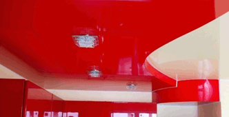
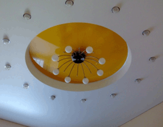

О потолках
Цвета и фактуры
Фотогалерея
Вопросы
Цены
Новости:
Работаем без выходных
Дополнительня услуга:
Гипсокартонные конструкции любой сложности
Скорость:
Оперативный замер
Монтаж 2-3 потолка в день
Качество:
Чистый монтаж
Гарантия на потолки- 12 лет
|
|
Виды фактур натяжных потолков:

Глянцевый
Глянцевый потолок на сегодняшний день является самой распрастраненной фактурой, так как обладает рядом преимуществ. Глянец, а по другому лаковая фактура, обладает отражающими свойствами. Глянцевая фактура широко используется в помещениях маленьких по площади. В ней отражаются мебель, предметы интерьера и появляется так называемый эффект второй комнаты.
У глянцевого потолка самое большое разнообразие цветов, более 100. Это позволит Вам найти самое желанное дизайнерское решение и добиться конечного результата.

Сатиновый
Сатиновый натяжной потолок имеет спокойные и элегантные цветовые тона. В том случае, если помещение не нуждается в вычурности и помпезности, то потолок подобного типа будет правильным выбором.
Благодаря структуре материала, имеющего особый микрорельеф своей поверхности, ткань способна отражать световые блики. В результате этого на потолке появляется игра света, которая может быть различной в зависимости от силы освещения и направления лучей источника света, как естественного, так и искусственного. Сатиновые тона являются хорошим фоном для всего интерьера, не отвлекая на себя основное внимание. Потолки подобного типа способны внести недостающую гармонию в помещение с любым видом дизайна.

Матовый
Матовые натяжные потолки это поистине классическое решение для Вашего дома, офиса, поскольку в классике выразилось стремление к идеалу, который удалось реализовать в дизайнерских решениях с помощью потолков современности. Матовый натяжной потолок - создает иллюзию идеально ровной поверхности, точно и четко передающий нанесенный на него цвет. Этот потолок также исключает появление отблесков. Он найдет свое признание как у любителей светлых интерьерных решений, так и у поклонников ярких, экзотических цветов. На потолке может быть реализовано любое цветовое и дизайнерское решение. Он имеет вид отштукатуренного потолка, при этом не требует больших усилий по уходу за ним. Потолок этого типа всегда будет радовать Вас своей новизной, поскольку он обладает уникальной способностью сохранять свой цвет на века.
|
|